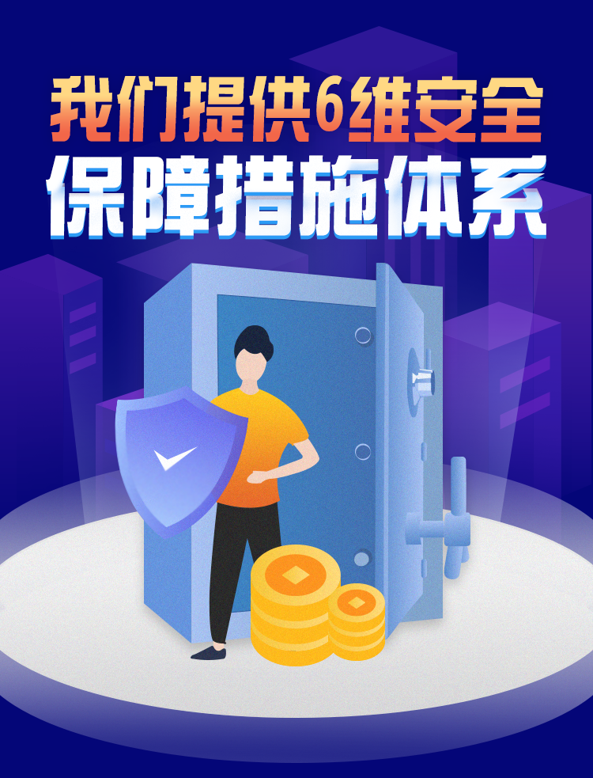

经营团队拥有丰富的金融产品创新和风险管理经验，对资产的风险管理理念和风险防控体系建设有着深入的理解。同时设置较高的合作机构和项目准入标准，严格甄选优质金融机构的优质资产，对所有项目进行全方位实地尽调，以实现资产安全。
鸿坤金服平台严格遵守国家金融监管法律法规，严格遵守地方政府出台的各项规章制度，致力于打造规范化、阳光化的社区金融服务平台。为用户提供24小时全天候服务。主动进行业务披露和风险提示，定期发布经营报告。
鸿坤金服有完善的系统安全内部控制制度，严格管理用户数据，从流程上实现用户隐私不被泄露，更不会将用户信息泄露给第三方机构，实现用户隐私不受侵犯。采用数字签名技术、安全套接协议，对用户与平台的网络访问进行加密，实现通信私密不被窃听，通过三层防火墙对各系统进行隔离，最大程度实现用户数据安全，严格执行备份容灾计划，保证数据和系统在极端情况下不受影响。
由央行监管的、专业的第三方支付机构为您的交易资金划转提供相应的服务，实现资金流转清晰、合法、可查，增加交易透明度及安全性。
鸿坤金服促成的交易均会在线上生成相应的电子合同及协议，平台的数据及合同将通过与第三方数据保全机构合作的方式实现实时、完整性的第三方数据备份及保管，并可将所有数据通过公证机关进行全流程数据公证和加印国家授时中心统一时间，实现电子证据的固化和保全。
2002年成立至今，鸿坤已经发展成为一家拥有鸿坤资本、鸿坤产业、鸿坤文旅和鸿坤地产四大业务板块的复合型控股集团。鸿坤地产已经连续多年位列中国地产百强、房地产开发企业创新能力10强和区域运营10强，业务覆盖住宅地产、商业地产、物业服务3大板块，截止目前，鸿坤地产累计总开发面积超1000万平方米，土地储备量超500万平方米，并获得AAA级公司债券信用评级，资产管理规模超过500亿。
鸿坤亿润投资成立于2007年，公司定位于中国新一代产融结合的创新型资产管理公司，致力于以金融投资推动城市经济发展。
2007年成功发起北方地区第一支有限合伙基金。截至目前已成功投资50余家企业，10余家企业已经成功上市，资产管理规模已超100亿，为基金投资者获取了丰厚的投资回报。
亿润结合鸿坤集团产融结合的优势资源，以“地产+”和泛社区服务为突围策略，布局经济新常态下的新消费、新服务、新技术、新金融领域，抓住消费升级浪潮契机，继建立“地产+”PE投资生态圈后深度结合鸿坤产业和鸿坤文旅的优势资源，在2017年又迭代升级布局了“特色产业+”PE投资生态。
2018年，鸿坤亿润投资荣膺“投中2017年度中国最佳私募股权投资机构TOP100”。